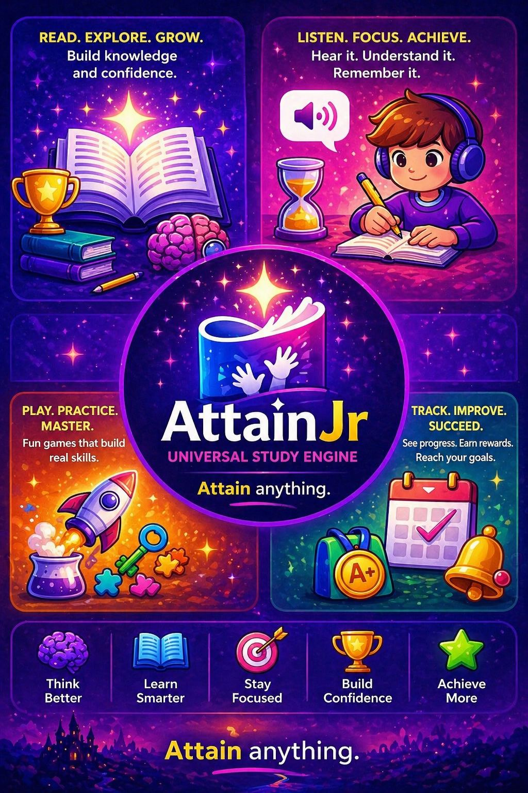

Tap a story below to start reading. iPad needs a tap before sound can play.
Tap a setting to change it. Settings save automatically.
Read your first story to start tracking progress.
Enter your 4-digit PIN. (First time? Pick any 4 digits and we'll save them.)
Pick a different voice for each character. The narrator voice reads everything else.